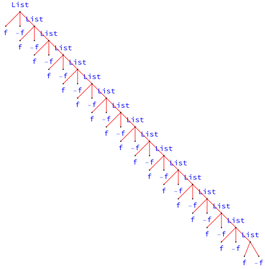

计算控制¶
References:
-
Mathematica documentation:
tutorial/EvaluationOfExpressions -
Mathematica documentation:
tutorial/Evaluation -
Mathematica documentation:
tutorial/Expressions
0. 背景¶
It's convenient to treat a collection of similar objects as a unity, the properties of which reveal the relations between specific objects. Sometimes, the collection itself admits "nice" geometric structures, and we call it the moduli space.
Borrowing the idea of differential geometry, a curve in the moduli represents an one parameter family of objects, aka, finite deformation, and the tangent space contains independent directions of infinitesimal deformations. A typical example is the moduli space of Narain CFTs: tangent vectors correspond to exactly marginal operators, and measures correspond to ensembles of CFTs.
In the following we will review the evaluation of expressions in Mathematica by analogy with the moduli space.
| Expr | Moduli |
|---|---|
| expression | object |
| rule | tagent vector |
| pattern matching | vector field |
| evaluation | flow |
| complexity | potential |
1. 表达式¶
本节回顾 Mathematica 的表达式，记所有可能的符合语法的表达式的集合为 Expr。在 Mathematica 中不存在明确的类型系统，一切对象皆为表达式 (expression)。表达式的结构可表示为树 (tree)，函数 TreeForm 给出表达式的树形式。
Everything is an expression.
At the core of the Wolfram Language is the foundational idea that everything - data, programs, formulas, graphics, documents - can be represented as symbolic expressions. And it is this unifying concept that underlies the Wolfram Language's symbolic programming paradigm, and makes possible much of the unique power of the Wolfram Language and the Wolfram System.
-- from Mathematica documentation guide/Expressions
与树的结构相似，不存在非平凡子表达式的称为原子表达式 (atom)，例如数、符号、字符串。若干表达式可以复合为复杂度更高的表达式，此处复合 (composite) 指树的拼接，类似于 operad，形如f0[f1, f2, ...]。
此外，若干树构成森林，这对应于合成 (compound) ，形如 f1; f2; ...，类似于张量积。
What is an operad?
see the explanation in math3ma.com.
举例说明上述介绍， Witt 代数的生成元 \(L_n=x^{n+1} \p_x\) 可写为如下的纯函数，
作用在函数 \(f(x)\) 上 L[n]@f[x]， 给出 \(x^{n+1} f'(x)\)。\(L_{n}\)的树形式为

可用 Head, Level, Position, Part, Length, Depth 等函数访问树的内部结构。此外，函数 LeafCount 给出树的节点 (node) 或称叶子的总数，因此提供了一种表达式复杂度的度量。例如 LeafCount@L[n] 给出上图中的节点数 11。
2. 计算¶
表达式的集合 Expr 是一个无结构的平凡集合。对表达式的计算 (evaluation) 可实现表达式之间的形变 (deformation)。当然，计算类似于离散动力系统，此处并无良好定义的微分与线性结构。
特定对象 \(f_0\) 的不同无穷小形变可简单写为 \(f_0 \mapsto f_0 + \d_i f_0,\, \d_i f_0\in TM_{f_0}\)，例如有效作用量的形变为
形变切方向的类似物即为规则 (rule)，记表达式 f 的所有子表达式的集合为 sub[f]。可以改变特定表达式 f0 的规则列表为 t[f0] = Table[f -> ..., {f, sub[f0]}]。替换函数 Replace 可实现形变，下列复合函数给出 f0 的所有可能形变，
矢量场 \(v\) 需要在 \(M\) 的每点指派无穷小形变 $f \mapsto v_f, \, \forall f\in M $。模式匹配提供了全称量词的类似物，含有模式的延迟规则为 p_ /; condition :> ...，可作用到 Expr 中的每一个表达式上。
需要注意的是，赋值函数 Set (=), SetDelayed (:=), UpSet (^=), UpSetDelayed (^:=) 等的作用是在 Mathematica 的规则库中添加用户指定的规则。例如 f[x_]:=x 实际上是指定了符号 f 的下值 (down value)，
2.1 标准计算¶
在计算时，Mathematica 会反复遍历表达式 f0[f1, f2, ...] 的子结构，比对规则库进行模式匹配，直到表达式的形式不变，即收敛到不动点。标准计算的流程为：
- 计算表达式的标头符号
f0； - 依次计算子表达式
f1, f2, ...； - 应用符号的属性 (attribute)；
- 应用用户定义进行计算，即利用规则进行替换；
- 应用内置定义进行计算；
- 重复上述步骤，直到表达式不再变化或溢出。
可类比为矢量场提供的 flow 收敛到不动点或发散。例如递归溢出，
f := -f;
Block[{$RecursionLimit = 20},
TreeForm[Trace[f, f],
PlotStyle -> Directive[PointSize[Large], RGBColor[1, 0, 0, 0.5]],
VertexLabeling -> Automatic]
]
给出如下错误信息

2.2 非标准计算¶
计算依赖规则之间的顺序，类似于不同的矢量场不交换。因此选取合适的规则顺序方可得到目标表达式。
HoldUnevaluatedInactivated